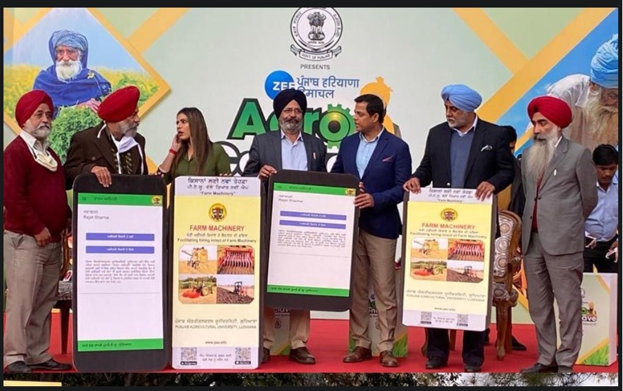

Sardar Randeep Singh Nabha, Agriculture Minister, Punjab, launched “Farm Machinery App” of Punjab Agricultural University (PAU) during the Farm Expo organized for the farmers of Punjab, Haryana and Himachal Pradesh recently. He also released Punjab Agriculture Vision CD for the next five years, compiled by PAU. In his remarks, the Minister hailed the remarkable contribution of PAU in making the nation food secure and updating the farmers, farm women and the rural youths about latest developments in agriculture through ICT tools during COVID-19 times. He said the Farm Machinery App will help in hiring in and hiring out of agricultural machinery and at the same time, will benefit small and marginal farmers. DK Tiwari, IAS, Financial Commissioner (Development), Agriculture and Farmers’ Welfare and Vice-Chancellor, PAU said the CD and App are the new achievements of PAU that wishes to enrich the knowledge of the farmers through digital technologies. PAU’s Farm Machinery App Benefits: Dr JS Mahal, Director of Extension Education, while sharing the benefits and importance of the App, said that more than 65 per cent farmers of Punjab own less than 5 acres of land and cannot afford the farm machinery. This App will be bridge the gap between the farmers who want machinery and the farmers who are into custom hiring of farm machinery, he added. It will connect the farmers with the farm machinery owners, who can get good returns through this technology. It is available in Google Play Store, he said. On the occasion were Dr GPS Sodhi, Additional Director of Extension Education; and Dr GS Manes, Additional Director of Research (Farm Mechanization and Bioenergy) were also present. 